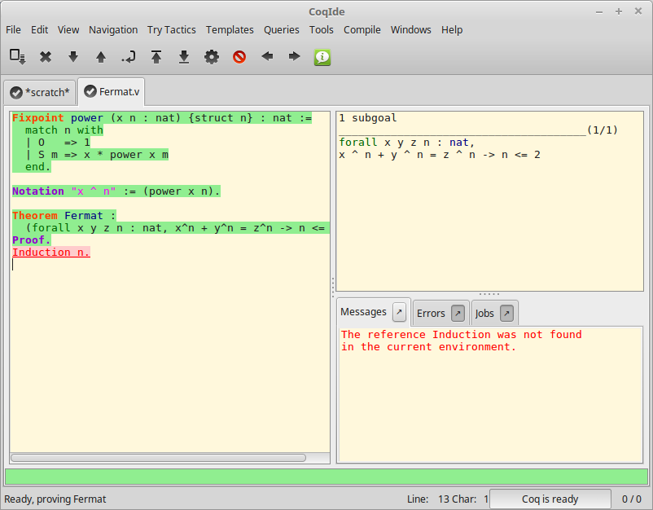

Coq Integrated Development Environment¶
The Coq Integrated Development Environment is a graphical tool, to be
used as a user-friendly replacement to coqtop. Its main purpose is to
allow the user to navigate forward and backward into a Coq vernacular
file, executing corresponding commands or undoing them respectively.
CoqIDE is run by typing the command coqide on the command line.
Without argument, the main screen is displayed with an “unnamed
buffer”, and with a filename as argument, another buffer displaying
the contents of that file. Additionally, coqide accepts the same
options as coqtop, given in The Coq commands, the ones having obviously
no meaning for CoqIDE being ignored.

A sample CoqIDE main screen, while navigating into a file Fermat.v,
is shown in the figure CoqIDE main screen.
At the top is a menu bar, and a tool bar
below it. The large window on the left is displaying the various
script buffers. The upper right window is the goal window, where
goals to be proven are displayed. The lower right window is the message
window, where various messages resulting from commands are displayed.
At the bottom is the status bar.
Managing files and buffers, basic editing¶
In the script window, you may open arbitrarily many buffers to edit. The File menu allows you to open files or create some, save them, print or export them into various formats. Among all these buffers, there is always one which is the current running buffer, whose name is displayed on a background in the processed color (green by default), which is the one where Coq commands are currently executed.
Buffers may be edited as in any text editor, and classical basic editing commands (Copy/Paste, …) are available in the Edit menu. CoqIDE offers only basic editing commands, so if you need more complex editing commands, you may launch your favorite text editor on the current buffer, using the Edit/External Editor menu.
Proof folding¶
As your script grows bigger and bigger, it might be useful to hide the proofs of your theorems and lemmas.
This feature is toggled via the Hide entry of the Navigation menu. The
proof shall be enclosed between Proof. and Qed., both with their final
dots. The proof that shall be hidden or revealed is the first one
whose beginning statement (such as Theorem) precedes the insertion
cursor.
Vernacular commands, templates¶
The Templates menu allows using shortcuts to insert vernacular commands. This is a nice way to proceed if you are not sure of the syntax of the command you want.
Moreover, from this menu you can automatically insert templates of complex
commands like Fixpoint that you can conveniently fill afterwards.
Queries¶

We call query any vernacular command that does not change the current state,
such as Check, Search, etc. To run such commands interactively, without
writing them in scripts, CoqIDE offers a query pane. The query pane can be
displayed on demand by using the View menu, or using the shortcut F1.
Queries can also be performed by selecting a particular phrase, then choosing an
item from the Queries menu. The response then appears in the message window.
The image above shows the result after selecting of the phrase
Nat.mul in the script window, and choosing Print from the Queries
menu.
Compilation¶
The Compile menu offers direct commands to:
compile the current buffer
run a compilation using
makego to the last compilation error
create a
Makefileusingcoq_makefile.
Customizations¶
You may customize your environment using the menu Edit/Preferences. A new window will be displayed, with several customization sections presented as a notebook.
The first section is for selecting the text font used for scripts, goal and message windows.
The second and third sections are for controlling colors and style.
The fourth section is for customizing the editor. It includes in particular the ability to activate an Emacs mode named micro-Proof-General (use the Help menu to know more about the available bindings).
The next section is devoted to file management: you may configure
automatic saving of files, by periodically saving the contents into
files named #f# for each opened file f. You may also activate the
revert feature: in case a opened file is modified on the disk by a
third party, CoqIDE may read it again for you. Note that in the case
you edited that same file, you will be prompted to choose to either
discard your changes or not. The File charset encoding choice is
described below in Character encoding for saved files.
The Externals section allows customizing the external commands for
compilation, printing, web browsing. In the browser command, you may
use %s to denote the URL to open, for example:
firefox -remote "OpenURL(%s)".
Notice that these settings are saved in the file .coqiderc of your
home directory.
A Gtk2 accelerator keymap is saved under the name .coqide.keys. It
is not recommended to edit this file manually: to modify a given menu
shortcut, go to the corresponding menu item without releasing the
mouse button, press the key you want for the new shortcut, and release
the mouse button afterwards. If your system does not allow it, you may
still edit this configuration file by hand, but this is more involved.
Using Unicode symbols¶
CoqIDE is based on GTK+ and inherits from it support for Unicode in its text windows. Consequently a large set of symbols is available for notations. Furthermore, CoqIDE conveniently provides a simple way to input Unicode characters.
Displaying Unicode symbols¶
You just need to define suitable notations as described in the chapter Syntax extensions and interpretation scopes. For example, to use the mathematical symbols ∀ and ∃, you may define:
Notation "∀ x .. y , P" := (forall x, .. (forall y, P) ..) (at level 200, x binder, y binder, right associativity) : type_scope. Notation "∃ x .. y , P" := (exists x, .. (exists y, P) ..) (at level 200, x binder, y binder, right associativity) : type_scope.
There exists a small set of such notations already defined, in the
file utf8.v of Coq library, so you may enable them just by
Require Import Unicode.Utf8 inside CoqIDE, or equivalently,
by starting CoqIDE with coqide -l utf8.
However, there are some issues when using such Unicode symbols: you of
course need to use a character font which supports them. In the Fonts
section of the preferences, the Preview line displays some Unicode
symbols, so you could figure out if the selected font is OK. Related
to this, one thing you may need to do is choosing whether GTK+ should
use antialiased fonts or not, by setting the environment variable
GDK_USE_XFT to 1 or 0 respectively.
Bindings for input of Unicode symbols¶
CoqIDE supports a builtin mechanism to input non-ASCII symbols.
For example, to input π, it suffices to type \pi then press the
combination of key Shift+Space (default key binding). Often, it
suffices to type a prefix of the latex token, e.g. typing \p
then Shift+Space suffices to insert a π.
For several symbols, ASCII art is also recognized, e.g. \-> for a
right arrow, or \>= for a greater than or equal sign.
A larger number of latex tokens are supported by default. The full list is available here: https://github.com/coq/coq/blob/master/ide/default_bindings_src.ml
Custom bindings may be added, as explained further on.
Note
It remains possible to input non-ASCII symbols using system-wide approaches independent of CoqIDE.
Adding custom bindings¶
To extend the default set of bindings, create a file named coqide.bindings
and place it in the same folder as coqide.keys. On Linux, this would be
the folder ~/.config/coq. The file coqide.bindings should contain one
binding per line, in the form \key value, followed by an optional priority
integer. (The key and value should not contain any space character.)
Example
Here is an example configuration file:
\par ||
\pi π 1
\le ≤ 1
\lambda λ 2
\lambdas λs
Above, the priority number 1 on \pi indicates that the prefix \p
should resolve to \pi, and not to something else (e.g. \par).
Similarly, the above settings ensure than \l resolves to \le,
and that \la resolves to \lambda.
It can be useful to work with per-project binding files. For this purpose
CoqIDE accepts a command line argument of the form
-unicode-bindings file1,file2,...,fileN.
Each of the file tokens provided may consists of one of:
a path to a custom bindings file,
the token
default, which resolves to the default bindings file,the token
local, which resolves to thecoqide.bindingsfile stored in the user configuration directory.
Warning
If a filename other than the first one includes a "~" to refer
to the home directory, it won't be expanded properly. To work around that
issue, one should not use comas but instead repeat the flag, in the form:
-unicode-bindings file1 .. -unicode-bindings fileN.
Note
If two bindings for a same token both have the same priority value (or both have no priority value set), then the binding considered is the one from the file that comes first on the command line.
Character encoding for saved files¶
In the Files section of the preferences, the encoding option is related to the way files are saved.
If you have no need to exchange files with non UTF-8 aware applications, it is better to choose the UTF-8 encoding, since it guarantees that your files will be read again without problems. (This is because when CoqIDE reads a file, it tries to automatically detect its character encoding.)
If you choose something else than UTF-8, then missing characters will
be written encoded by x{....} or x{........} where each dot is
an hexadecimal digit: the number between braces is the hexadecimal
Unicode index for the missing character.